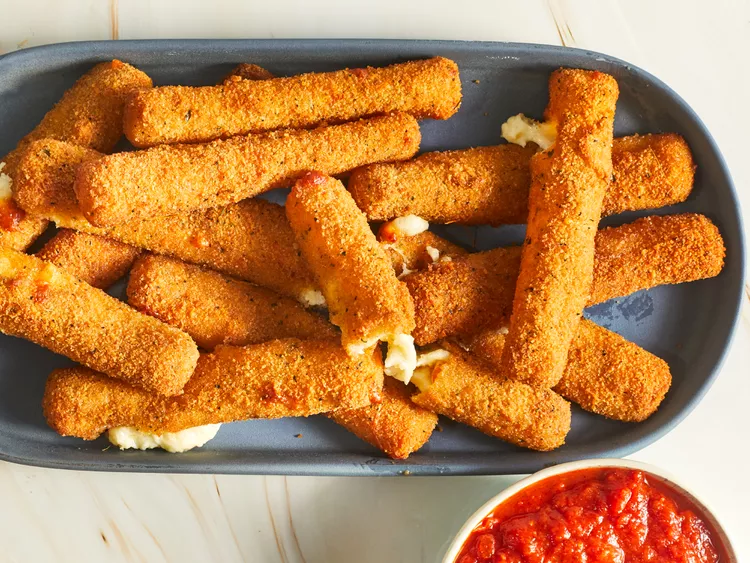

Fried mozzarella chesse sticks

Description
creamy homemade fried mozzarella cheese sticks that's great as a party snack or starter
Ingredients
- 2 large eggs, beaten
- ¼ cup water
- 2 cups Italian seasoned bread crumbs
- ½ teaspoon garlic salt
- ⅔ cup all-purpose flour
- ⅓ cup cornstarch
- 2 cups oil for frying, or as needed
- 1 (16 ounce) package mozzarella cheese sticks
Steps
- Gather all ingredients.
- Whisk eggs and water together in a small bowl. Combine bread crumbs and garlic salt in a medium bowl. Whisk flour and cornstarch together in a third bowl. Heat oil in a deep fryer or large, heavy saucepan to 365 degrees F (185 degrees C).
- Dredge 1 mozzarella stick in flour mixture; shake off excess. Dip into egg mixture; allow excess to drip off. Press into bread crumbs to coat; repeat dipping in egg and bread crumbs to create a double coating. Place breaded mozzarella stick on a parchment-lined baking sheet. Repeat with remaining mozzarella sticks.
- Freeze until firm to help coating set and prevent cheese from oozing during frying, about 45 minutes.
- Carefully lower frozen mozzarella sticks, in batches of 3 to 4 at a time, into the hot oil using a spider spoon or tongs. Fry until golden brown, 1 to 2 minutes, flipping occasionally for even color. Avoid overcrowding the pan to maintain oil temperature. Transfer fried mozzarella sticks with a spider spoon or tongs to paper towels; drain. Repeat with remaining mozzarella sticks.
- Serve hot and enjoy!
Home